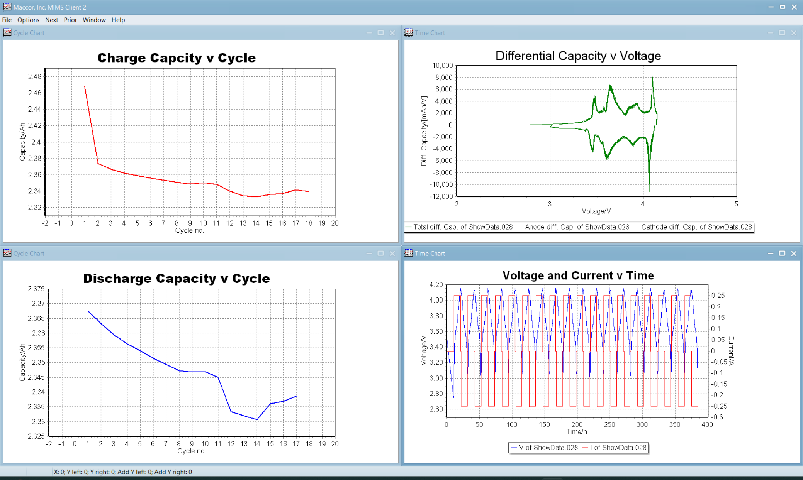

MIMS Client — Data Analysis
Maccor's Information Management System Client — an advanced charting and statistical analysis platform that turns raw battery test records into engineering insight. Generate capacity fade trends, dQ/dV curves, efficiency plots, and multi-cell statistical tables with a single tool.
From Data File to Engineering Decision
Every chart type needed for battery characterisation, cycle life analysis, and cell comparison — in one application.
Multi-Panel Analysis View — Capacity Fade & dQ/dV

What MIMS Client Does
MIMS Client is the analysis and visualisation front-end for all Maccor test data. It connects to the MIMS Server database, loads data files directly, or opens ASCII exports from the Data Export tool. Once data is loaded, the client provides time-based and cycle-based charting, differential capacity analysis, statistical comparisons across multiple cells, embedded procedure viewing, and annotated chart export for reports and publications.
Available Visualisations
- Voltage / Current vs. Time: Full waveform strip chart with configurable time window and zoom
- Capacity vs. Cycle: Discharge capacity fade curve across the full program duration
- Efficiency vs. Cycle: Coulombic efficiency (CE) and energy efficiency (EE) per cycle
- ESR vs. Cycle: DC internal resistance trend over cycle life
- dQ/dV: Differential capacity versus voltage — configurable Min. dV and reference electrode support
- Voltage vs. Capacity: Charge/discharge curves for individual or overlaid cycles
- Auxiliary vs. Time or Cycle: Temperature, pressure, and auxiliary voltage overlaid with electrical channels
- Four-quadrant layout: Up to four simultaneous chart panels in a single window
Statistical Analysis Tools
For test matrices with multiple cells, MIMS Client generates statistical summary tables showing mean, standard deviation, min, max, and range for any selected metric. Groups of cells can be compared on a single chart with individual traces overlaid, or displayed as a statistical band (mean ± Nσ). Useful applications include:
- Cell-to-cell variation in formation CE across a production batch
- Capacity retention spread across a cycle life matrix at multiple temperatures
- DCIR mean and sigma by state of charge across a HPPC test matrix
One-Click Chart Templates
Any chart configuration — axis settings, channels, scale ranges, annotations, header/footer text — can be saved as a named template. Opening a new data file and clicking the template name instantly applies the saved configuration, producing a consistent chart without manual reconfiguration. Templates are particularly valuable in regulated environments where chart format must be standardised across all reports, and in high-throughput labs where analysts need to process many data files quickly.
Frequently Asked Questions
Can I overlay data from different test programs on the same chart?
Yes. Multiple data files can be loaded simultaneously and plotted on the same axes. This is the standard approach for cell comparison matrices — overlay capacity fade curves for 10 or 20 cells, then use the statistical tools to compute and overlay the population mean and deviation band.
How do I view the procedure that generated a data file?
MIMS embeds a copy of the procedure file in the data record at test start. The Embedded Procedure view in MIMS Client displays this snapshot in the same grid format as Build Test, and the procedure can be extracted and saved as a .bt2 file for re-use.